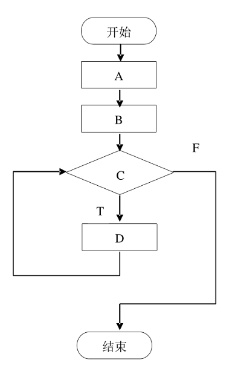

Chapter 4 - 详细设计¶
4.0 复习内容¶
- 了解结构程序设计的要求
- 掌握详细设计工具（程序流程图、盒图、PAD图）
4.1 结构程序设计的要求¶
结构程序的经典定义：一个程序的代码块仅仅通过顺序、选择和循环这三种基本控制结构连接，并且每个代码块只有一个入口和一个出口。
结构程序设计更全面的定义：结构程序设计是尽可能少用 go to 语句的程序设计方法。最好仅在检测出错误时才使用 go to 语句，而且应该总是使用前向 go to 语句。
理论上只用上述 3 种基本控制结构就可以实现任何单入口单出口的程序，但为了实际使用方便，还允许使用 do-until 和 do-case 两种控制结构。
经典的结构程序设计：只允许使用顺序、if_then_else 型分支和 do_while 型循环这三种基本控制结构。
扩展的结构程序设计：除上述三种基本控制结构外，还允许使用 do-until 型循环结构和 do-case 型多分支结构。
修正的结构程序设计：再允许使用 break(leave) 结构。
Question
程序的三种基本结构是 ( 顺序、选择和循环 )
A. 过程、子过程和子程序
B. 递归、堆栈和队列
C. 顺序、选择和循环
D. 调用、返回和转移
Question
程序的三种基本控制结构的共同特点是 ( 单入口，单出口 )
A. 只能用来描述简单程序
B. 不能嵌套使用
C. 单入口，单出口
D. 仅用于自动控制系统
程序的特点就是从一个入口开始，最终以一个出口结束，其间可以用顺序、选择和循环方式对程序的流向进行控制。三种结构可以写出非常复杂的程序，而且选择和循环都可以嵌套设计。
4.2 详细设计工具 P93¶
- 详细设计工具
- 图形
- 系统/程序流程图
- N-S (盒图)
- PAD 图
- 表格：判定表、判定树
- 语言：PDL 语言 (过程设计语言)
- 图形
4.2.1 PFD: Process Flow Diagram, 程序/系统流程图 P22¶

Question
程序流程图 (PDF) 中的箭头代表的是 ( 控制流 )
A. 数据流
B. 控制流
C. 调用关系
D. 组成关系
4.2.2 盒图 (N-S 图)¶
4.2.3 PAD 图¶
PAD 图例¶

PAD 图¶

Question
某算法设计程序流程图如下所示，试将该图转换为 PAD 图

题目¶
1. 概要设计和详细设计的关系¶
Question
软件设计一般分为概要设计和详细设计，它们之间的关系是 ( 全局和局部 )。
A. 全局和局部
B. 抽象和具体
C. 总体和层次
D. 功能和结构
2. 详细设计的任务¶
Abstract
详细设计的任务：
- 算法设计
- 数据结构设计
- 确定模块接口细节
- 测试用例设计
- 数据库物理设计
- 数据代码设计
- 其他设计
- 文档编写与评审
Question
软件详细设计的主要任务是确定每个模块的 ( 算法和使用的数据结构 )。
A. 算法和使用的数据结构
B. 外部接口
C. 功能
D. 编程
软件详细设计的任务，是为软件结构图中的每一个模块确定实现算法和局部数据结构，用某种选定的表达工具表示算法和数据结构的细节。
本题考查结构化设计方法的详细设计。从软件开发的工程化观点来看，在使用程序设计语言编制程序以前，需要对所采用算法的逻辑关系进行分析，设计出全部必要的过程细节，并给予清晰的表达。详细设计的任务就是要确定各个模块的实现算法，并精确地表达这些算法。
详细设计阶段就是为每个模块完成的功能进行具体的描述，要把功能描述转变为精确的、结构化的过程描述。详细设计的主要任务就是实现函数功能，而函数主要由算法和数据结构组成。
详细设计和测试的关系¶
Question
单元测试的测试用例主要根据 ( ) 的结果来设计。
A. 需求分析
B. 源程序
C. 概要设计
D. 详细设计